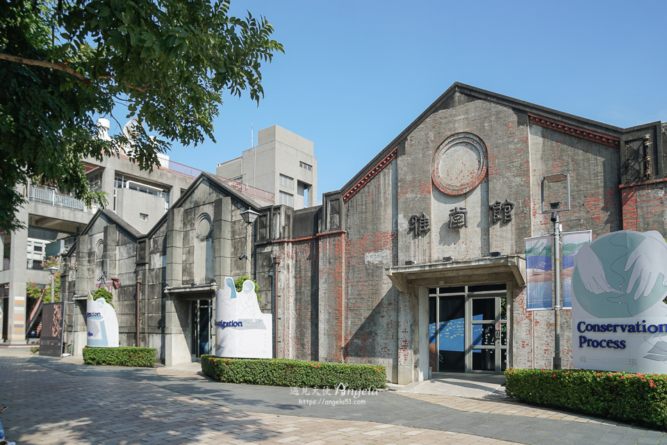
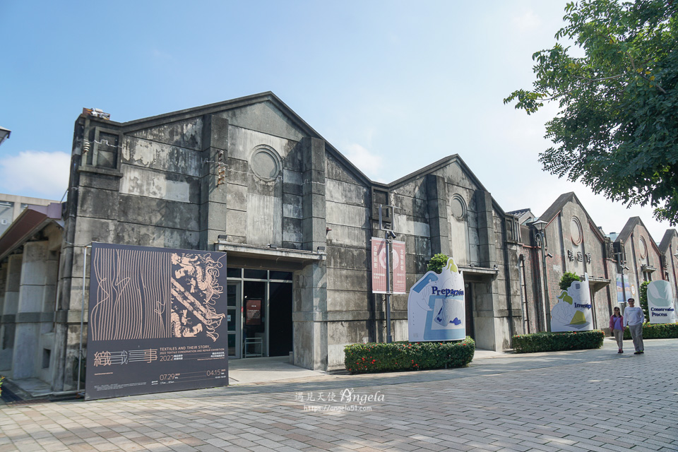
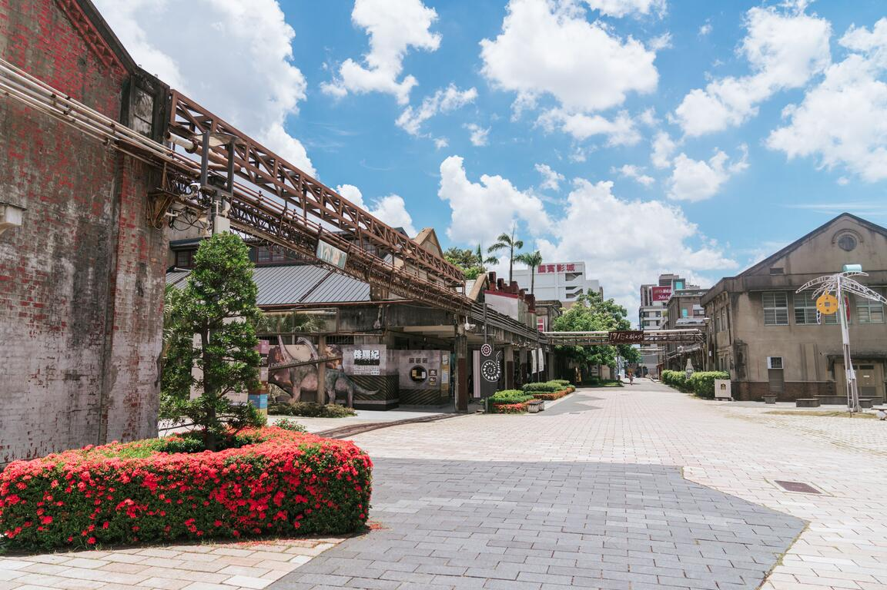

文化部文化資產園區



電話：04-87654321
地址：臺中市南區復興路三段362號
開放時間：
星期日：06:00 – 17:00
星期一：休息
星期二：06:00 – 17:00
星期三：06:00 – 17:00
星期四：06:00 – 17:00
星期五：06:00 – 17:00
星期六：06:00 – 17:00
官方網址：https://www.boch.gov.tw/home/zh-tw
景點介紹
台中文化創意產業園區，佔地5.6公頃，前身為創立於1916年日治時期的民營「大正製酒株式會社」，在1922年日本政府實施酒類專賣制度後被收歸官有，1928年成為當時全台最大的釀酒工場。
1945年台灣光復之後，酒廠兩度更名為「台中酒工場」、「第五酒廠」。1947年政府改菸酒專賣為公賣，由台灣菸酒公賣局接管，1957年再度更名為「台灣省菸酒公賣局台中酒廠」。
隨著時代變遷，及因應台中市都市計劃規劃發展之需，台中酒廠於1998年搬遷到台中工業區新廠，留下大片工業遺址與歷史建築。2002年7月台中市政府將全區主要建物登錄為歷史建築，舊酒廠得以完整保留。現發展成為文化部五大文化創意產業園區之。舊台中酒廠從此由製酒工業遺址活化新生，蛻變成文化創意產業的推展基地。